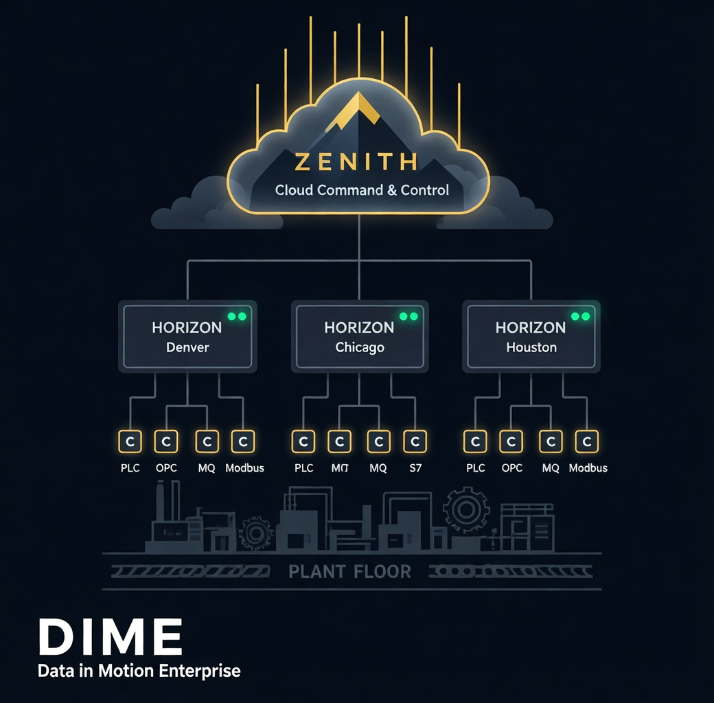
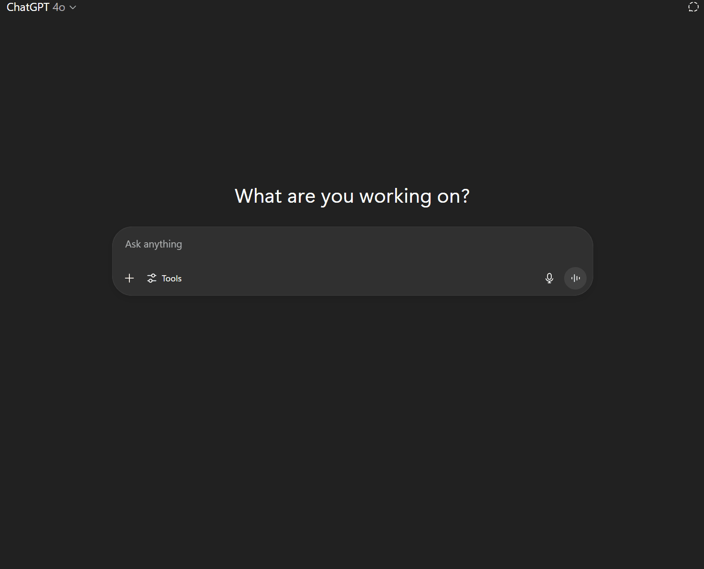

DIME · Data In Motion Enterprise
Create actionable industrial intelligence in hours.
DIME is the universal translator for industrial data — connecting every machine, system, and protocol on your plant floor to the analytics and enterprise software you actually use, in hours instead of weeks.

Why DIME
Built for the realities of the plant floor.
50+ protocols
PLCs, robots, CNCs, sensors, databases, and message brokers — all translated into one unified stream.
Sub-millisecond latency
A high-performance edge connector keeps real-time data genuinely real-time.
Zero custom code
Configure, don't program. Stand up new connections without writing bespoke integrations.
Distributed by design
Built for distributed sites, diverse equipment, and strict network policies.
OT-to-IT bridge
Connects operational technology on the floor to the IT and cloud systems that run the business.
AI-assisted setup
DIME's AI can build a working configuration straight from your documentation in about a minute.
Three-tier architecture
Connector. Horizons. Zenith.
DIME is a complete data platform across three tiers. The Connector runs on the plant floor, speaking each asset's native protocol and translating it into a unified stream. Horizons manage the connectors at each site — reporting fleet health, picking up tasks, and executing locally. Zenith sits in the cloud, holding the state of the entire fleet, auto-detecting stale devices, and aggregating data from every site.
- Edge connector for native protocol translation
- Per-site management with local execution
- Cloud fleet state, diagnostics, and aggregation

AI in action
From documentation to configuration in a minute.
Point DIME's AI at your machine documentation and watch it generate a complete, working configuration — the kind of integration work that used to take weeks of specialist time, done in minutes.
DIMEBBS is the definitive technical resource and AI configuration method for DIME — the canonical reference for getting the most out of the platform.

Ready to transform your industrial operations?
DIME is part of the Mr. IIoT toolkit — connectivity and integration, end to end.
More from the toolkit